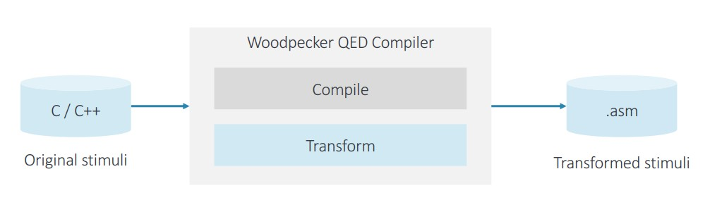
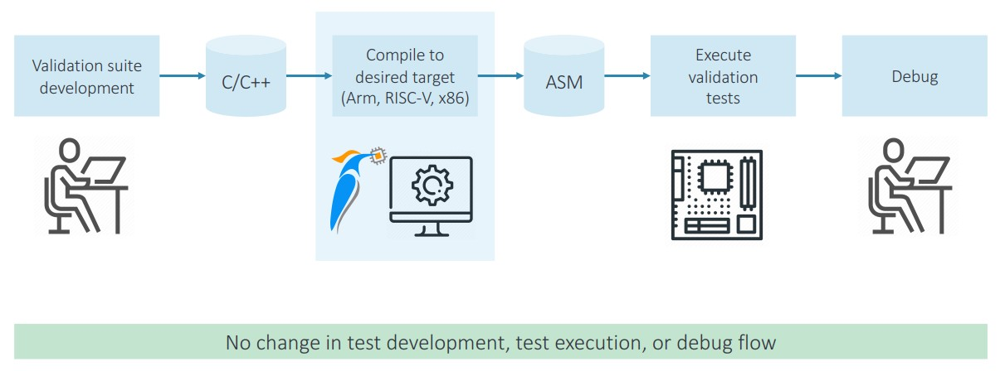

Accelerate post-silicon validation with Woodpecker QED
-
✔
Identify and resolve bugs otherwise not found during validation
-
✔
Shift left: Detect more complex bugs earlier
-
✔
Dramatic EDL reduction improves ability to root cause
Significantly amplify coverage and reduce failure resolution effort of existing
stimulus
in an
automated manner and without requiring additional expertise
- No impact on IC design or implementation flow
- No change in overallvalidation flow
- No additional expertise needed
How QED Works
-
Basic tenant of the test world:
Coverage = control x observe
-
Control:
from baseline case
-
Observe:
Enhanced by QED => higher coverage, lower detect latency
Woodpecker QED key concepts:QED Transform During Compile

-
-
Original stimuli is transformed using multiple transformations
-
-
Transformations increase coverage and reduce EDL
-
-
Transformed stimuli is executed and debugged using same process
Woodpecker QED key concepts:Transformations
Transformation
- EDDI
- Inst Min, Inst Max
- PLC
- CFCSS
Errors detected
- Execution errors
- Masked errors
- Load/store errors
- Branch errors
Description
- Error Detection using Duplicated Instructions Self-consistency: If a fault occurs in
original or duplicated instructions, the values produced at the end will not match
- Reduces intrusiveness of the EDDI transformations that could Masked errors cause
masked
and false errors
- Proactive Load and Check Duplicates store instructions if the destination of the
data is
shared across threads.
- Control Flow Checking using Software Signatures Inserts a unique signature into
every
basic block in a function.
EDDI / Mirror transformation
Description
- Assign duplicate set of registers and memory space
- Each instruction is duplicated
Duplicated instructions use dedicated register / memory space
- Self-consistency check:
Original and duplicated instructions should yield same results
Self-consistency: Check a system against itself
Woodpecker QED in your flow

Woodpecker QED benefits
Validation quality
- Amplify coverage of existing test stimulus
- Validate the functional operation of the IC
Validation productivity
- Reduce root cause resolution effort
- Shift-left the validation effort: Find and resolve more errors and bugs earlier
- Enabled by significant reduction in
error detection latency (EDL)
Detect bugs previously not found during validation without additional resources
-
-
No impact on IC implementation flow
-
-
No change in overall verification / test methodology
-
-
No additional expertise needed